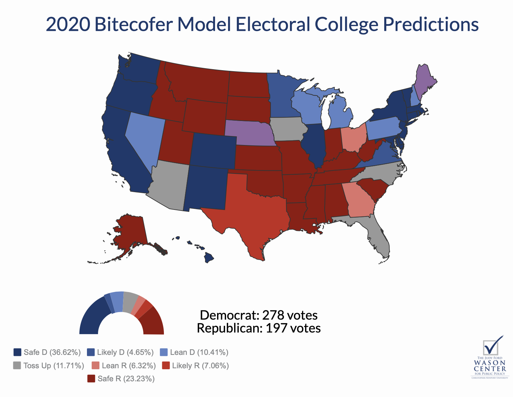

class: center, inverse
What is a “data journalist”?
Example: What if everyone voted?
Guiding questions
–
1. How many Democrats and Republicans are there?
Given data constraints, we’re really asking: How many Clinton and Trump voters are there?
–
2. How are they distributed geographically?
The answer lets us assign Electoral College votes.
Data
–
1. Cooperative Congressional Election Study (CCES): A survey of 64,000 Americans
Includes demographic data and 2016 vote choice for 40,000+ validated voters
–
Method
–
1. Train a predictive model on CCES data
- Multi-level logistic regression
- Predict vote choice with: age, gender, race, education, region and interactions between them
–
2. Use the model to predict voting habits for every eligible American
Via “post-stratification” on the ACS
ACS Post-stratification
–
1. Each “type” of person gets their own “cell”:
- One cell for white men ages 18-30 without college degrees who live in the Northeast
- Another for white men ages 18-30 without college degrees who live in the South
- Another for non-white men ages 18-30 without college degrees who live in the Northeast
- etc.
–
2. We know how many voters in that “cell” live in each state
–
3. So we can say that x and y% of each “cell” vote for Clinton or Trump, then add up
- For example, a Latino female age 18-30 with a college degree in Texas is 85% likely to vote for a Democrat for president (White man 65+ is 80% Republican)
Results

Results

Results: If everyone voted

class: center, inverse
Election forecasting: How do we do it, and why?
How to build an election forecasting model:
What’s in a model?
- Start with historical data: a measurement variable and outcome variable
- Like polls and presidential vote share, for example
- Build a statistical model that predicts the outcome variable given some value of the measurement variable
- Add more measurement variables (but not too many!)
- like GDP or presidential approval “fundamentals”
Election forecasting
Fundamentals + polls -> vote share + simulation -> win probabilities!
When forecasts go wrong
• Misspecified models
• Bad training data
• Surprise outcomes — 2016
- Shy Trump (Tory) effect? No evidence.
- Late deciders? Slow-moving averages? Yes.
• Miscommunicating uncertainty
Miscommunicating uncertainty: probability
Readers have the best understanding of the horse race when presented with probabilities
“Trump will lose” in 2020?
- How can she know for sure?
Forcing uncertainty

–
- Expected probabilistic outcome: 300 Democratic electoral votes
–
- If you assume a root mean squared error of 45 EVs (half of the 2016 error):
–
- Distribution of outcomes (95% confidence interval): 212 - 388 Democratic electoral votes
–
- Or just a 75% chance of Democratic victory
–
- (If you assume 2016 error is normal for the forecast, then it’s just a 64% chance)
class: center, inverse
Questions?
(Volunteers get priority!)
“I would like to know Elliott’s opinion on the NC electoral college and how it may affect the upcoming election.”
- North Carolina leans slightly more Republican than other toss-up states like Florida
- Democrats won the state house and senate popular vote there in 2018
- But 2020 is unlikely to be such a wave year
- So I’d say NC is a toss-up state, but unlikely to be the tipping point or focus of much intense activity from Democrats
Besides Texas, “do you think there are other states that the Democratic Party could be focusing this energy towards?”
- Offense:
- Arizona and especially Georgia are much more likely to flip than Texas
- Toss-up:
- And the 2020 election looks like it very well could be very close, so they should obviously focus resources on Wisconsin, Pennsylvania and Michigan
- Defense:
- New Hampshire, the forgotten swing state
- ??
- Iowa: Hurt by tariffs and unclear where it stands politically; looked more like 2012 voting in 2018 mid-terms and has high Trump disapproval
“Who will win the primary?”
- Based on polls, Warren has something like a 30% chance to win. Biden has maybe 25%.
- That leaves a 45% chance that anyone else wins the nomination.
- I wouldn’t bet on anyone individual given those odds. (But if I had to, I’d have to pick Warren)
“In your article on the urban-rural divide in American politics you allude to both passive demographic change and intentional party realignment as means for the Democratic Party to court rural communities. Do you believe the party will make inroads and if so, which method do you believe will have a greater impact?”
- I think you’ve got this backwards (or I misunderstand the question):
- Demographic change in cities—from white labor centers to multi-ethnic immigrant communities—has forced Democrats to embrace diversity or face total electoral annihilation
- They are facing some consequences from the geographic nature of US politics because of this
- To stay competitive in the US Senate, the Democrats may soon have to consider new strategies for courting rural voters
- Maybe better farm policy? Job training programs in Middle America?
- Or, again, class-based politics that de-emphasize race without decreasing black turnout
class: center